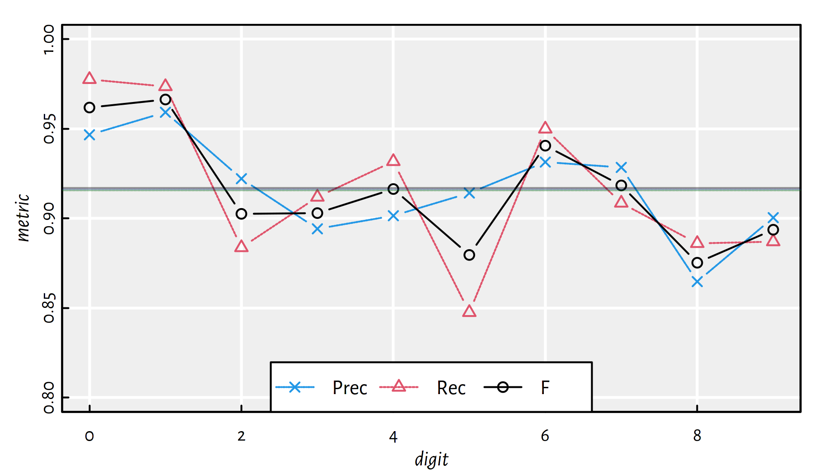
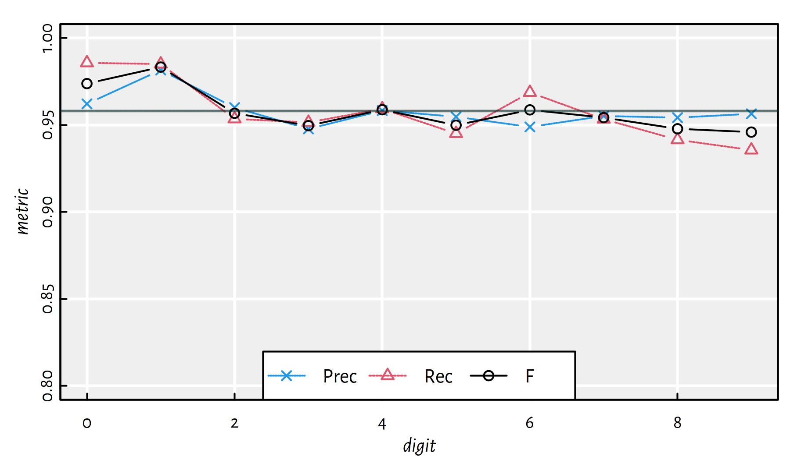
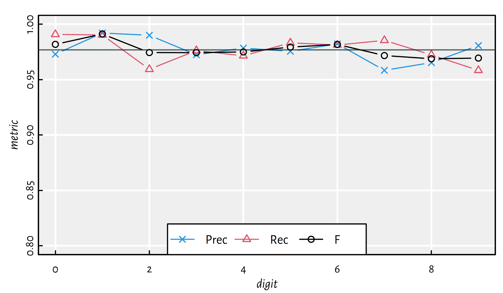
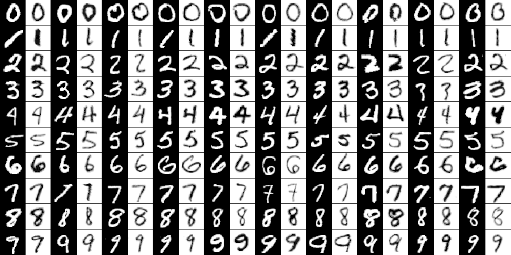
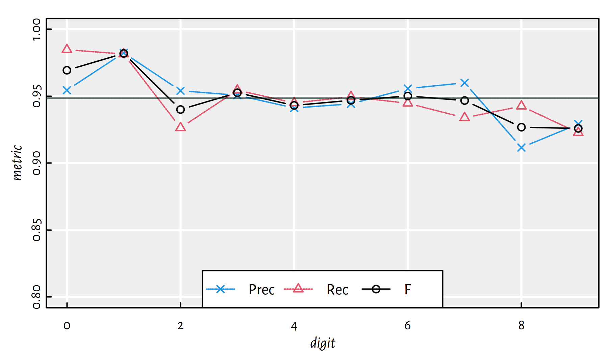
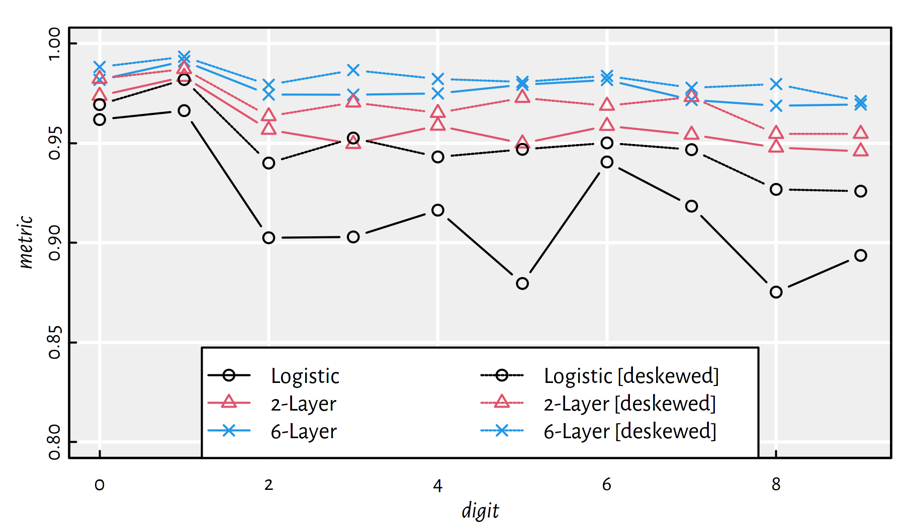

5 Shallow and Deep Neural Networks
5.1 Introduction
5.1.1 Binary Logistic Regression: Recap
Let \(\mathbf{X}\in\mathbb{R}^{n\times p}\) be an input matrix that consists of \(n\) points in a \(p\)-dimensional space.
In other words, we have a database on \(n\) objects, each of which being described by means of \(p\) numerical features.
\[ \mathbf{X}= \left[ \begin{array}{cccc} x_{1,1} & x_{1,2} & \cdots & x_{1,p} \\ x_{2,1} & x_{2,2} & \cdots & x_{2,p} \\ \vdots & \vdots & \ddots & \vdots \\ x_{n,1} & x_{n,2} & \cdots & x_{n,p} \\ \end{array} \right] \]
With each input \(\mathbf{x}_{i,\cdot}\) we associate the desired output \(y_i\) which is a categorical label – hence we will be dealing with classification tasks again.
In binary logistic regression we were modelling the probabilities that a given input belongs to either of the two classes:
\[ \begin{array}{ll} \Pr(Y=1|\mathbf{X},\boldsymbol\beta)=&\phantom{1-}\phi(\beta_0 + \beta_1 X_1 + \dots + \beta_p X_p)\\ \Pr(Y=0|\mathbf{X},\boldsymbol\beta)=&1-\phi(\beta_0 + \beta_1 X_1 + \dots + \beta_p X_p)\\ \end{array} \] where \(\phi(z) = \frac{1}{1+e^{-z}}\) is the logistic sigmoid function.
It holds: \[ \begin{array}{ll} \Pr(Y=1|\mathbf{X},\boldsymbol\beta)=&\displaystyle\frac{1}{1+e^{-(\beta_0 + \beta_1 X_1 + \dots + \beta_p X_p)}}\\ \Pr(Y=0|\mathbf{X},\boldsymbol\beta)=&\displaystyle\frac{e^{-(\beta_0 + \beta_1 X_1 + \dots + \beta_p X_p)}}{1+e^{-(\beta_0 + \beta_1 X_1 + \dots + \beta_p X_p)}}\\ \end{array} \]
The fitting of the model was performed by minimising the cross-entropy (log-loss): \[ \min_{\boldsymbol\beta\in\mathbb{R}^{p+1}} -\frac{1}{n} \sum_{i=1}^n \left(y_i\log \Pr(Y=1|\mathbf{x}_{i,\cdot},\boldsymbol\beta) + (1-y_i)\log \Pr(Y=0|\mathbf{x}_{i,\cdot},\boldsymbol\beta)\right). \]
Note that for each \(i\), either the left or the right term (in the bracketed expression) vanishes.
Hence, we may also write the above as: \[ \min_{\boldsymbol\beta\in\mathbb{R}^{p+1}} -\frac{1}{n} \sum_{i=1}^n \log \Pr(Y=y_i|\mathbf{x}_{i,\cdot},\boldsymbol\beta). \]
In this chapter we will generalise the binary logistic regression model:
First we will consider the case of multiclass classification.
Then we will note that multinomial logistic regression is a special case of a feed-forward neural network.
5.1.2 Data
We will study the famous classic – the MNIST image classification dataset.
== Modified National Institute of Standards and Technology database, see http://yann.lecun.com/exdb/mnist/
It consists of 28×28 pixel images of handwritten digits:
train: 60,000 training images,t10k: 10,000 testing images.
There are 10 unique digits, so this is a multiclass classification problem.
The dataset is already “too easy” for testing of the state-of-the-art classifiers (see the notes below), but it’s a great educational example.
A few image instances from each class:

Accessing MNIST via the keras package (which we will use throughout this chapter anyway) is easy:
library("keras")
mnist <- dataset_mnist()
X_train <- mnist$train$x
Y_train <- mnist$train$y
X_test <- mnist$test$x
Y_test <- mnist$test$yX_train and X_test consist of 28×28 pixel images.
## [1] 60000 28 28## [1] 10000 28 28
X_trainandX_testare 3-dimensional arrays, think of them as vectors of 60000 and 10000 matrices of size 28×28, respectively.
These are greyscale images, with 0 = black, …, 255 = white:
## [1] 0 255It is better to convert the colour values to 0.0 = black, …, 1.0 = white:
Y_train and Y_test are the corresponding integer labels:
## [1] 60000## [1] 10000## Y_train
## 0 1 2 3 4 5 6 7 8 9
## 5923 6742 5958 6131 5842 5421 5918 6265 5851 5949## Y_test
## 0 1 2 3 4 5 6 7 8 9
## 980 1135 1032 1010 982 892 958 1028 974 1009id <- 123 # which image to show
image(z=t(X_train[id,,]), col=grey.colors(256, 0, 1),
axes=FALSE, asp=1, ylim=c(1, 0))
legend("topleft", bg="white",
legend=sprintf("True label=%d", Y_train[id]))
5.2 Multinomial Logistic Regression
5.2.1 A Note on Data Representation
So… you may now be wondering “how do we construct an image classifier, this seems so complicated!”.
For a computer, (almost) everything is just numbers.
Instead of playing with \(n\) matrices, each of size 28×28, we may “flatten” the images so as to get \(n\) “long” vectors of length \(p=784\).
The classifiers studied here do not take the “spatial” positioning of the pixels into account anyway.
(*) See, however, convolutional neural networks (CNNs), e.g., in (Goodfellow et al. 2016).
Hence, now we’re back to our “comfort zone”.
5.2.2 Extending Logistic Regression
Let us generalise the binary logistic regression model to a 10-class one (or, more generally, \(K\)-class one).
This time we will be modelling ten probabilities, with \(\Pr(Y=k|\mathbf{X},\mathbf{B})\) denoting the confidence that a given image \(\mathbf{X}\) is in fact the \(k\)-th digit:
\[ \begin{array}{lcl} \Pr(Y=0|\mathbf{X},\mathbf{B})&=&\dots\\ \Pr(Y=1|\mathbf{X},\mathbf{B})&=&\dots\\ &\vdots&\\ \Pr(Y=9|\mathbf{X},\mathbf{B})&=&\dots\\ \end{array} \]
where \(\mathbf{B}\) is the set of underlying model parameters (to be determined soon).
In binary logistic regression, the class probabilities are obtained by “cleverly normalising” the outputs of a linear model (so that we obtain a value in \([0,1]\)).
In the multinomial case, we can use a separate linear model for each digit so that \(\Pr(Y=k|\mathbf{X},\mathbf{B})\) is given as a function of \[\beta_{0,k} + \beta_{1,k} X_{1} + \dots + \beta_{p,k} X_{p}.\]
Therefore, instead of a parameter vector of length \((p+1)\), we will need a parameter matrix of size \((p+1)\times 10\) representing the model’s definition.
Side note: upper case of \(\beta\) is \(B\).
Then, these 10 numbers will have to be normalised so as to they are positive and sum to \(1\).
To maintain the spirit of the original model, we can apply \(e^{-(\beta_{0,k} + \beta_{1,k} X_{1} + \dots + \beta_{p,k} X_{p})}\) to get a positive value, because the co-domain of the exponential function \(t\mapsto e^t\) is \((0,\infty)\).
Then, dividing each output by the sum of all the outputs will guarantee that the total sum equals 1.
This leads to: \[ \begin{array}{lcl} \Pr(Y=0|\mathbf{X},\mathbf{B})&=&\displaystyle\frac{e^{-(\beta_{0,0} + \beta_{1,0} X_{1} + \dots + \beta_{p,0} X_{p})}}{\sum_{k=0}^9 e^{-(\beta_{0,k} + \beta_{1,k} X_{1} + \dots + \beta_{p,k} X_p)}},\\ \Pr(Y=1|\mathbf{X},\mathbf{B})&=&\displaystyle\frac{e^{-(\beta_{0,1} + \beta_{1,1} X_{1} + \dots + \beta_{p,1} X_{p})}}{\sum_{k=0}^9 e^{-(\beta_{0,k} + \beta_{1,k} X_{1} + \dots + \beta_{p,k} X_{p})}},\\ &\vdots&\\ \Pr(Y=9|\mathbf{X},\mathbf{B})&=&\displaystyle\frac{e^{-(\beta_{0,9} + \beta_{1,9} X_{1} + \dots + \beta_{p,9} X_{p})}}{\sum_{k=0}^9 e^{-(\beta_{0,k} + \beta_{1,k} X_{1} + \dots + \beta_{p,k} X_{p})}}.\\ \end{array} \]
Note that we get the binary logistic regression if we fix \(\beta_{0,0}=\beta_{1,0}=\dots=\beta_{p,0}=0\) as \(e^0=1\) and consider only the classes \(0\) and \(1\).
5.2.3 Softmax Function
The above transformation (that maps 10 arbitrary real numbers to positive ones that sum to 1) is called the softmax function (or softargmax).
softmax <- function(T) {
T2 <- exp(T) # ignore the minus sign above
T2/sum(T2)
}
round(rbind(
softmax(c(0, 0, 10, 0, 0, 0, 0, 0, 0, 0)),
softmax(c(0, 0, 10, 0, 0, 0, 10, 0, 0, 0)),
softmax(c(0, 0, 10, 0, 0, 0, 9, 0, 0, 0)),
softmax(c(0, 0, 10, 0, 0, 0, 9, 0, 0, 8))), 2)## [,1] [,2] [,3] [,4] [,5] [,6] [,7] [,8] [,9] [,10]
## [1,] 0 0 1.00 0 0 0 0.00 0 0 0.00
## [2,] 0 0 0.50 0 0 0 0.50 0 0 0.00
## [3,] 0 0 0.73 0 0 0 0.27 0 0 0.00
## [4,] 0 0 0.67 0 0 0 0.24 0 0 0.095.2.4 One-Hot Encoding and Decoding
The ten class-belongingness-degrees can be decoded to obtain a single label by simply choosing the class that is assigned the highest probability.
y_pred <- softmax(c(0, 0, 10, 0, 0, 0, 9, 0, 0, 8))
round(y_pred, 2) # probabilities of class 0, 1, 2, ..., 9## [1] 0.00 0.00 0.67 0.00 0.00 0.00 0.24 0.00 0.00 0.09## [1] 2
which.max(y)returns an indexksuch thaty[k]==max(y)(recall that in R the first element in a vector is at index1). Mathematically, we denote this operation as \(\mathrm{arg}\max_{k=1,\dots,K} y_k\).
To make processing the outputs of a logistic regression model more convenient, we will apply the one-hot-encoding of the labels.
Here, each label will be represented as a 0-1 probability vector – with probability 1 corresponding to the true class only.
For example:
y <- 2 # true class (example)
y2 <- rep(0, 10)
y2[y+1] <- 1 # +1 because we need 0..9 -> 1..10
y2 # one-hot-encoded y## [1] 0 0 1 0 0 0 0 0 0 0To one-hot encode the reference outputs in R, we start with a matrix of size \(n\times 10\) populated with “0”s:
Next, for every \(i\), we insert a “1” in the \(i\)-th row
and the (Y_train[\(i\)]+1)-th column:
In R, indexing a matrix
Awith a 2-column matrixB, i.e.,A[B], allows for an easy access toA[B[1,1], B[1,2]],A[B[2,1], B[2,2]],A[B[3,1], B[3,2]], …
Sanity check:
## [1] 5 0 4 1 9 2## [,1] [,2] [,3] [,4] [,5] [,6] [,7] [,8] [,9] [,10]
## [1,] 0 0 0 0 0 1 0 0 0 0
## [2,] 1 0 0 0 0 0 0 0 0 0
## [3,] 0 0 0 0 1 0 0 0 0 0
## [4,] 0 1 0 0 0 0 0 0 0 0
## [5,] 0 0 0 0 0 0 0 0 0 1
## [6,] 0 0 1 0 0 0 0 0 0 0Let us generalise the above idea and write a function that can one-hot-encode any vector of integer labels:
one_hot_encode <- function(Y) {
stopifnot(is.numeric(Y))
c1 <- min(Y) # first class label
cK <- max(Y) # last class label
K <- cK-c1+1 # number of classes
Y2 <- matrix(0, nrow=length(Y), ncol=K)
Y2[cbind(1:length(Y), Y-c1+1)] <- 1
Y2
}Encode Y_train and Y_test:
5.2.5 Cross-entropy Revisited
In essence, we will be comparing the probability vectors as generated by a classifier, \(\hat{Y}\):
## [1] 0.00 0.00 0.67 0.00 0.00 0.00 0.24 0.00 0.00 0.09with the one-hot-encoded true probabilities, \(Y\):
## [1] 0 0 1 0 0 0 0 0 0 0It turns out that one of the definitions of cross-entropy introduced above already handles the case of multiclass classification: \[ E(\mathbf{B}) = -\frac{1}{n} \sum_{i=1}^n \log \Pr(Y=y_i|\mathbf{x}_{i,\cdot},\mathbf{B}). \] The smaller the probability corresponding to the ground-truth class outputted by the classifier, the higher the penalty:

To sum up, we will be solving the optimisation problem: \[ \min_{\mathbf{B}\in\mathbb{R}^{(p+1)\times 10}} -\frac{1}{n} \sum_{i=1}^n \log \Pr(Y=y_i|\mathbf{x}_{i,\cdot},\mathbf{B}). \] This has no analytical solution, but can be solved using iterative methods (see the chapter on optimisation).
(*) Side note: A single term in the above formula, \[ \log \Pr(Y=y_i|\mathbf{x}_{i,\cdot},\mathbf{B}) \] given:
y_pred– a vector of 10 probabilities generated by the model: \[ \left[\Pr(Y=0|\mathbf{x}_{i,\cdot},\mathbf{B})\ \Pr(Y=1|\mathbf{x}_{i,\cdot},\mathbf{B})\ \cdots\ \Pr(Y=9|\mathbf{x}_{i,\cdot},\mathbf{B})\right] \]y2– a one-hot-encoded version of the true label, \(y_i\), of the form \[ \left[0\ 0\ \cdots\ 0\ 1\ 0\ \cdots\ 0\right] \]
can be computed as:
## [1] -0.40781745.2.6 Problem Formulation in Matrix Form (**)
The definition of a multinomial logistic regression model for a multiclass classification task involving classes \(\{1,2,\dots,K\}\) is slightly bloated.
Assuming that \(\mathbf{X}\in\mathbb{R}^{n\times p}\) is the input matrix, to compute the \(K\) predicted probabilities for the \(i\)-th input, \[ \left[ \hat{y}_{i,1}\ \hat{y}_{i,2}\ \cdots\ \hat{y}_{i,K} \right], \] given a parameter matrix \(\mathbf{B}^{(p+1)\times K}\), we apply: \[ \begin{array}{lcl} \hat{y}_{i,1}=\Pr(Y=1|\mathbf{x}_{i,\cdot},\mathbf{B})&=&\displaystyle\frac{e^{\beta_{0,1} + \beta_{1,1} x_{i,1} + \dots + \beta_{p,1} x_{i,p}}}{\sum_{k=1}^K e^{\beta_{0,k} + \beta_{1,k} x_{i,1} + \dots + \beta_{p,k} x_{i,p}}},\\ &\vdots&\\ \hat{y}_{i,K}=\Pr(Y=K|\mathbf{x}_{i,\cdot},\mathbf{B})&=&\displaystyle\frac{e^{\beta_{0,K} + \beta_{1,K} x_{i,1} + \dots + \beta_{p,K} x_{i,p}}}{\sum_{k=1}^K e^{\beta_{0,k} + \beta_{1,k} x_{i,1} + \dots + \beta_{p,k} x_{i,p}}}.\\ \end{array} \]
We have dropped the minus sign in the exponentiation for the brevity of notation. Note that we can always map \(b_{j,k}'=-b_{j,k}\).
It turns out we can make use of matrix notation to tidy the above formulas.
Denote the linear combinations prior to computing the softmax function with: \[ \begin{array}{lcl} t_{i,1}&=&\beta_{0,1} + \beta_{1,1} x_{i,1} + \dots + \beta_{p,1} x_{i,p}\\ &\vdots&\\ t_{i,K}&=&\beta_{0,K} + \beta_{1,K} x_{i,1} + \dots + \beta_{p,K} x_{i,p}\\ \end{array} \]
We have:
- \(x_{i,j}\) – \(i\)-th observation, \(j\)-th feature;
- \(\hat{y}_{i,k}\) – \(i\)-th observation, \(k\)-th class probability;
- \(\beta_{j,k}\) – coefficient for the \(j\)-th feature when computing the \(k\)-th class.
Note that by augmenting \(\mathbf{\dot{X}}=[\boldsymbol{1}\ \mathbf{X}]\in\mathbb{R}^{n\times (p+1)}\), where \(\dot{x}_{i,0}=1\) and \(\dot{x}_{i,j}=x_{i,j}\) for all \(j\ge 1\) and all \(i\), we can write the above as: \[ \begin{array}{lclcl} t_{i,1}&=&\sum_{j=0}^p \dot{x}_{i,j}\, \beta_{j,1} &=& \dot{\mathbf{x}}_{i,\cdot}\, \boldsymbol\beta_{\cdot,1}\\ &\vdots&\\ t_{i,K}&=&\sum_{j=0}^p \dot{x}_{i,j}\, \beta_{j,K} &=& \dot{\mathbf{x}}_{i,\cdot}\, \boldsymbol\beta_{\cdot,K}\\ \end{array} \]
We can get the \(K\) linear combinations all at once in the form of a row vector by writing: \[ \left[ t_{i,1}\ t_{i,2}\ \cdots\ t_{i,K} \right] = {\mathbf{x}_{i,\cdot}}\, \mathbf{B} \]
Moreover, we can do that for all the \(n\) inputs by writing: \[ \mathbf{T}=\dot{\mathbf{X}}\,\mathbf{B} \] Yes, this is a single matrix multiplication, we have \(\mathbf{T}\in\mathbb{R}^{n\times K}\).
To obtain \(\hat{\mathbf{Y}}\), we have to apply the softmax function on every row of \(\mathbf{T}\): \[ \hat{\mathbf{Y}}=\mathrm{softmax}\left( \dot{\mathbf{X}}\,\mathbf{B} \right). \]
That’s it. Take some time to appreciate the elegance of this notation.
Methods for minimising crossentropy expressed in matrix form will be discussed in the next chapter.
5.3 Artificial Neural Networks
5.3.1 Artificial Neuron
A neuron as a mathematical function:
The perceptron (Frank Rosenblatt, 1958) was amongst the first models of artificial neurons:
5.3.2 Logistic Regression as a Neural Network
The above resembles our binary logistic regression model!
We determine a linear combination (a weighted sum) of 784 inputs and then transform it using the logistic sigmoid “activation” function.
A multiclass logistic regression can be depicted as:
This is an instance of a:
- single layer (there is only one processing step that consists of 10 units),
- densely connected (all the inputs are connected to all the neurons),
- feed-forward (outputs are generated by processing the inputs directly, there are no loops in the graph etc.)
artificial neural network that uses the softmax as the activation function.
5.3.3 Example in R
To train such a neural network (fit a multinomial logistic regression model), we will use the keras package, a wrapper around the state-of-the-art, GPU-enabled TensorFlow library.
# Start with an empty model
model <- keras_model_sequential()
# Add a single layer with 10 units and softmax activation
layer_dense(model, units=10, activation='softmax')
# We will be minimising the cross-entropy,
# sgd == stochastic gradient descent, see the next chapter
compile(model, optimizer='sgd',
loss='categorical_crossentropy')
# Fit the model
fit(model, X_train2, Y_train2, epochs=5)Predict over the test set and one-hot-decode the output probabilities:
## [,1] [,2] [,3] [,4] [,5] [,6] [,7] [,8] [,9] [,10]
## [1,] 0.00 0.00 0.00 0.00 0.00 0.00 0.00 1.00 0.00 0.00
## [2,] 0.01 0.00 0.85 0.02 0.00 0.02 0.08 0.00 0.01 0.00
## [3,] 0.00 0.95 0.02 0.01 0.00 0.00 0.01 0.01 0.01 0.00
## [4,] 1.00 0.00 0.00 0.00 0.00 0.00 0.00 0.00 0.00 0.00
## [5,] 0.00 0.00 0.01 0.00 0.87 0.00 0.01 0.02 0.02 0.07
## [6,] 0.00 0.97 0.00 0.01 0.00 0.00 0.00 0.00 0.01 0.00## [1] 7 2 1 0 4 1 4 9 6 9 0 6 9 0 1 5 9 7 3 4## [1] 7 2 1 0 4 1 4 9 5 9 0 6 9 0 1 5 9 7 3 4Accuracy on the test set:
## [1] 0.9097Performance metrics for each digit separately:
| i | Acc | Prec | Rec | F | TN | FN | FP | TP |
|---|---|---|---|---|---|---|---|---|
| 0 | 0.9918 | 0.9419291 | 0.9765306 | 0.9589178 | 8961 | 23 | 59 | 957 |
| 1 | 0.9916 | 0.9549784 | 0.9718062 | 0.9633188 | 8813 | 32 | 52 | 1103 |
| 2 | 0.9780 | 0.9134420 | 0.8691860 | 0.8907646 | 8883 | 135 | 85 | 897 |
| 3 | 0.9789 | 0.9007021 | 0.8891089 | 0.8948680 | 8891 | 112 | 99 | 898 |
| 4 | 0.9833 | 0.9153925 | 0.9144603 | 0.9149261 | 8935 | 84 | 83 | 898 |
| 5 | 0.9769 | 0.8948626 | 0.8396861 | 0.8663968 | 9020 | 143 | 88 | 749 |
| 6 | 0.9877 | 0.9229990 | 0.9509395 | 0.9367609 | 8966 | 47 | 76 | 911 |
| 7 | 0.9819 | 0.9180652 | 0.9046693 | 0.9113180 | 8889 | 98 | 83 | 930 |
| 8 | 0.9736 | 0.8550000 | 0.8778234 | 0.8662614 | 8881 | 119 | 145 | 855 |
| 9 | 0.9757 | 0.8711240 | 0.8909812 | 0.8809407 | 8858 | 110 | 133 | 899 |
Note how misleading the individual accuracies are! Averages:
## Acc Prec Rec F
## 0.9819400 0.9088495 0.9085191 0.9084473
5.4 Deep Neural Networks
5.4.1 Introduction
In a brain, a neuron’s output is an input to another neuron.
We could try aligning neurons into many interconnected layers.
5.4.2 Activation Functions
Each layer’s outputs should be transformed by some non-linear activation function. Otherwise, we’d end up with linear combinations of linear combinations, which are linear combinations themselves.
Example activation functions that can be used in hidden (inner) layers:
relu– The rectified linear unit: \[\psi(t)=\max(t, 0),\]sigmoid– The logistic sigmoid: \[\phi(t)=1 / (1 + \exp(-t)),\]tanh– The hyperbolic function: \[\mathrm{tanh}(t) = (\exp(t) - \exp(-t)) / (\exp(t) + \exp(-t)).\]
There is not much difference between them, but some might be more convenient to handle numerically than the others, depending on the implementation.
5.4.3 Example in R - 2 Layers
2-layer Neural Network 784-800-10
model <- keras_model_sequential()
layer_dense(model, units=800, activation='relu')
layer_dense(model, units=10, activation='softmax')
compile(model, optimizer='sgd',
loss='categorical_crossentropy')
fit(model, X_train2, Y_train2, epochs=5)
Y_pred2 <- predict(model, X_test2)
Y_pred <- apply(Y_pred2, 1, which.max)-1 # 1..10 -> 0..9
mean(Y_test == Y_pred) # accuracy on the test set## [1] 0.9417Performance metrics for each digit separately:
| i | Acc | Prec | Rec | F | TN | FN | FP | TP |
|---|---|---|---|---|---|---|---|---|
| 0 | 0.9942 | 0.9591633 | 0.9826531 | 0.9707661 | 8979 | 17 | 41 | 963 |
| 1 | 0.9950 | 0.9771328 | 0.9788546 | 0.9779930 | 8839 | 24 | 26 | 1111 |
| 2 | 0.9875 | 0.9467980 | 0.9312016 | 0.9389350 | 8914 | 71 | 54 | 961 |
| 3 | 0.9863 | 0.9241983 | 0.9415842 | 0.9328102 | 8912 | 59 | 78 | 951 |
| 4 | 0.9862 | 0.9042146 | 0.9613035 | 0.9318855 | 8918 | 38 | 100 | 944 |
| 5 | 0.9867 | 0.9407666 | 0.9080717 | 0.9241301 | 9057 | 82 | 51 | 810 |
| 6 | 0.9903 | 0.9470405 | 0.9519833 | 0.9495055 | 8991 | 46 | 51 | 912 |
| 7 | 0.9877 | 0.9423265 | 0.9377432 | 0.9400293 | 8913 | 64 | 59 | 964 |
| 8 | 0.9853 | 0.9215087 | 0.9281314 | 0.9248082 | 8949 | 70 | 77 | 904 |
| 9 | 0.9842 | 0.9512195 | 0.8889990 | 0.9190574 | 8945 | 112 | 46 | 897 |

5.4.4 Example in R - 6 Layers
6-layer Deep Neural Network 784-2500-2000-1500-1000-500-10
model <- keras_model_sequential()
layer_dense(model, units=2500, activation='relu')
layer_dense(model, units=2000, activation='relu')
layer_dense(model, units=1500, activation='relu')
layer_dense(model, units=1000, activation='relu')
layer_dense(model, units=500, activation='relu')
layer_dense(model, units=10, activation='softmax')
compile(model, optimizer='sgd',
loss='categorical_crossentropy')
fit(model, X_train2, Y_train2, epochs=5)
Y_pred2 <- predict(model, X_test2)
Y_pred <- apply(Y_pred2, 1, which.max)-1 # 1..10 -> 0..9
mean(Y_test == Y_pred) # accuracy on the test set## [1] 0.9729Performance metrics for each digit separately:
| i | Acc | Prec | Rec | F | TN | FN | FP | TP |
|---|---|---|---|---|---|---|---|---|
| 0 | 0.9965 | 0.9846154 | 0.9795918 | 0.9820972 | 9005 | 20 | 15 | 960 |
| 1 | 0.9967 | 0.9799652 | 0.9911894 | 0.9855453 | 8842 | 10 | 23 | 1125 |
| 2 | 0.9943 | 0.9841112 | 0.9602713 | 0.9720451 | 8952 | 41 | 16 | 991 |
| 3 | 0.9950 | 0.9838710 | 0.9663366 | 0.9750250 | 8974 | 34 | 16 | 976 |
| 4 | 0.9948 | 0.9678068 | 0.9796334 | 0.9736842 | 8986 | 20 | 32 | 962 |
| 5 | 0.9942 | 0.9612832 | 0.9742152 | 0.9677060 | 9073 | 23 | 35 | 869 |
| 6 | 0.9948 | 0.9788584 | 0.9665971 | 0.9726891 | 9022 | 32 | 20 | 926 |
| 7 | 0.9936 | 0.9643545 | 0.9737354 | 0.9690223 | 8935 | 27 | 37 | 1001 |
| 8 | 0.9934 | 0.9558233 | 0.9774127 | 0.9664975 | 8982 | 22 | 44 | 952 |
| 9 | 0.9925 | 0.9670000 | 0.9583746 | 0.9626680 | 8958 | 42 | 33 | 967 |

5.5 Preprocessing of Data
5.5.1 Introduction
Do not underestimate the power of appropriate data preprocessing — deep neural networks are not a universal replacement for a data engineer’s hard work!
On top of that, they are not interpretable – those are merely black-boxes.
Among the typical transformations of the input images we can find:
- normalisation of colours (setting brightness, stretching contrast, etc.),
- repositioning of the image (centring),
- deskewing (see below),
- denoising (e.g., by blurring).
Another frequently applied technique concerns an expansion of the training data — we can add “artificially contaminated” images to the training set (e.g., slightly rotated digits) so as to be more ready to whatever will be provided in the test test.
5.5.2 Image Deskewing
Deskewing of images (“straightening” of the digits) is amongst the most typical transformations that can be applied on MNIST.
Unfortunately, we don’t have the necessary mathematical background to discuss this operation in very detail.
Luckily, we can apply it on each image anyway.
See the GitHub repository at https://github.com/gagolews/Playground.R
for an example notebook and the deskew.R script.
# See https://github.com/gagolews/Playground.R
source("~/R/Playground.R/deskew.R")
# new_image <- deskew(old_image)
In each pair, the left image (black background) is the original one, and the right image (palette inverted for purely dramatic effects) is its deskewed version.
Deskew everything:
Z_train <- X_train
for (i in 1:dim(Z_train)[1]) {
Z_train[i,,] <- deskew(Z_train[i,,])
}
Z_train2 <- matrix(Z_train, ncol=28*28)
Z_test <- X_test
for (i in 1:dim(Z_test)[1]) {
Z_test[i,,] <- deskew(Z_test[i,,])
}
Z_test2 <- matrix(Z_test, ncol=28*28)Multinomial logistic regression model (1-layer NN):
model <- keras_model_sequential()
layer_dense(model, units=10, activation='softmax')
compile(model, optimizer='sgd',
loss='categorical_crossentropy')
fit(model, Z_train2, Y_train2, epochs=5)
Y_pred2 <- predict(model, Z_test2)
Y_pred <- apply(Y_pred2, 1, which.max)-1 # 1..10 -> 0..9
mean(Y_test == Y_pred) # accuracy on the test set## [1] 0.9449Performance metrics for each digit separately:
| i | Acc | Prec | Rec | F | TN | FN | FP | TP |
|---|---|---|---|---|---|---|---|---|
| 0 | 0.9936 | 0.9525692 | 0.9836735 | 0.9678715 | 8972 | 16 | 48 | 964 |
| 1 | 0.9951 | 0.9754816 | 0.9814978 | 0.9784805 | 8837 | 21 | 28 | 1114 |
| 2 | 0.9866 | 0.9508032 | 0.9176357 | 0.9339250 | 8919 | 85 | 49 | 947 |
| 3 | 0.9900 | 0.9586694 | 0.9415842 | 0.9500500 | 8949 | 59 | 41 | 951 |
| 4 | 0.9882 | 0.9354839 | 0.9450102 | 0.9402229 | 8954 | 54 | 64 | 928 |
| 5 | 0.9887 | 0.9351955 | 0.9383408 | 0.9367655 | 9050 | 55 | 58 | 837 |
| 6 | 0.9904 | 0.9517820 | 0.9478079 | 0.9497908 | 8996 | 50 | 46 | 908 |
| 7 | 0.9884 | 0.9569138 | 0.9289883 | 0.9427443 | 8929 | 73 | 43 | 955 |
| 8 | 0.9846 | 0.9051383 | 0.9404517 | 0.9224572 | 8930 | 58 | 96 | 916 |
| 9 | 0.9842 | 0.9225422 | 0.9207136 | 0.9216270 | 8913 | 80 | 78 | 929 |

5.6 Outro
5.6.1 Remarks
We have discussed a multinomial logistic regression model as a generalisation of the binary one.
This in turn is a special case of feed-forward neural networks.
There’s a lot of hype (again…) for deep neural networks in many applications, including vision, self-driving cars, natural language processing, speech recognition etc.
Many different architectures of neural networks and types of units are being considered in theory and in practice, e.g.:
- convolutional neural networks apply a series of signal (e.g., image) transformations in first layers, they might actually “discover” deskewing automatically etc.;
- recurrent neural networks can imitate long short-term memory that can be used for speech synthesis and time series prediction.
Main drawbacks of deep neural networks:
- learning is very slow, especially with very deep architectures (days, weeks);
- models are not explainable (black boxes) and hard to debug;
- finding good architectures is more art than science (maybe: more of a craftsmanship even);
- sometimes using deep neural network is just an excuse for being too lazy to do proper data cleansing and pre-processing.
There are many issues and challenges that will be tackled in more advanced AI/ML courses and books, such as (Goodfellow et al. 2016).
5.6.2 Beyond MNIST

The MNIST dataset is a classic, although its use in research is discouraged nowadays – the dataset is not considered challenging anymore – state of the art classifiers can reach \(99.8\%\) accuracy.
See Zalando’s Fashion-MNIST (by Kashif Rasul & Han Xiao) at https://github.com/zalandoresearch/fashion-mnist for a modern replacement.
Alternatively, take a look at CIFAR-10 and CIFAR-100 (https://www.cs.toronto.edu/~kriz/cifar.html) by A. Krizhevsky et al. or at ImageNet (http://image-net.org/index) for an even greater challenge.
5.6.3 Further Reading
Recommended further reading:
Other:
- keras package tutorials available at: https://cran.r-project.org/web/packages/keras/index.html and https://keras.rstudio.com